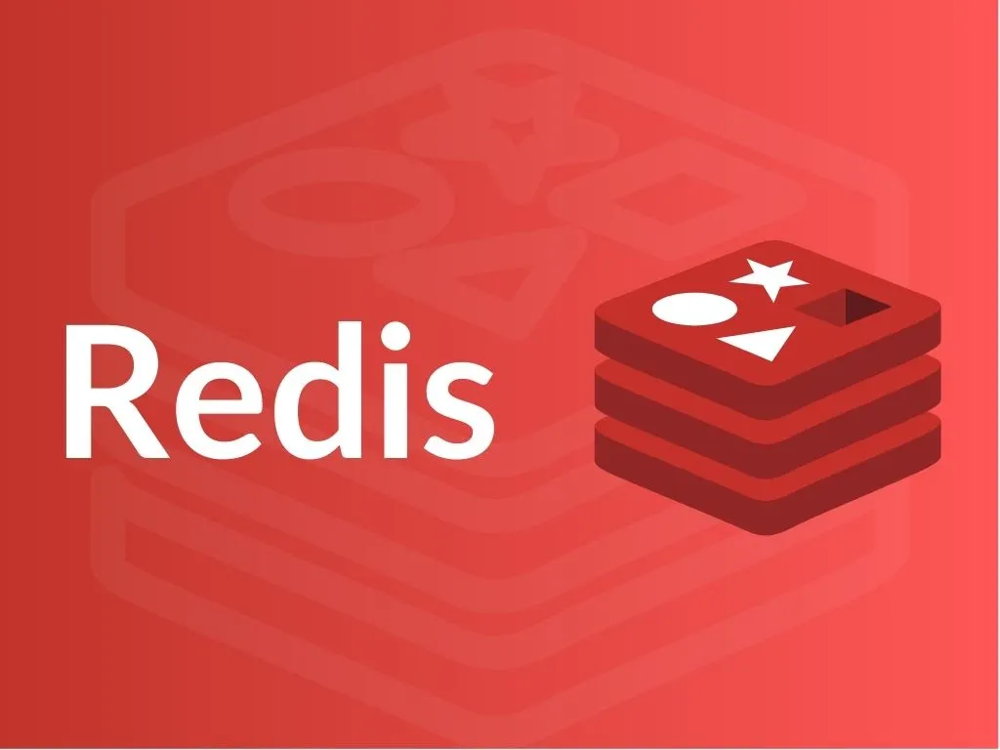

← Back to blog

Redis
Posted on September 08, 2025 | In: Redis
- Redis
- In memory database ⟶ Fast
- Non-Relational databaes (NoSQL) ⟶ key-value
- Remote ⟶ Making it accessible to multiple client/servers
- Persistent ⟶ The opportunity to keep data between reboots.
- Scaleable
- Support
- Replication ⟶ Scale read performance
- client side sharding ⟶ Scale write performance
- Redis allow us to store keys that map to any one of five different data structur types
- STRING
- Content: strings, integers, floating point
- Commands:
- GET ⟶ Fetch the data at the given key
- SET ⟶ Sets the value stored at the given key
- DEL ⟶ Deletes the value stored at the given key
- LIST
- Content: linked list of strings
Commands:
- RPUSH ⟶ Pushes the value onto the right end of the list
- LRANGE ⟶ Fetches a range of values from the list
- LINDEX ⟶ Fetches an item at a given position in the list
- LPOP ⟶ Pops the value from the left end of the list and return it
- SET
- Content: Unordered collection of strings
- Points:
- Because redis SET are unordered and unique we can not pop and push items from the ends like we did with LISTs. ⟶ instead we add or remove items by values
- Commands:
- SADD ⟶ Add item to the set
- SMEMBERS ⟶ Returns the entire set of items
- SISMEMBER ⟶ Check if an item is in the set
- SREM ⟶ Removes the item from the set, if exists
- HASH
- Content: Unordered hash table of keys to values
-
Points:
- Miniature versions of Redis
- Commands:
- HSET ⟶ Stores the value at the key in the hash
- HGET ⟶ Fetches the value at the given hash key
- HGETALL ⟶ Fetches the entire hash
- HDEL ⟶ Removes a key from the hash, if it exists
- HINCRBY ⟶ Increments a value in a hash
- ZSET
- Content: Ordered mapping of strings to floating-point scores ⟶ ordered by score
- Points:
- The keys(memebers) are unique and values are limited to floating-point numbers.
- ZSET keep items orderd by the item score ⟶ ZSETs are sorted in ascending order by their score.
- Commands:
- ZADD ⟶ Add member with the given score to the ZSET
- ZRANGE ⟶ Fetch the items in the ZSET from their positions in sorted order
- ZRANGEBYSCORE (asc), ZREVRANGEBYSCORE (desc) ⟶ Fetch items in the ZSET based on a range of scores
- ZREM ⟶ Remove the item from the ZSET, if it exists
- ZINCRBY ⟶ Increment the score of the member.
- General Points
- Seprator between parts of the names → The choice is subjective → : is common among redis users → Other options . / |
- The ensure that SET we'll give it an expiration time with EXPIRE command, which lets Redis automatically delete it.
- As matter of keeping the syntax of commands simple, Redis doesn't allow nested structures ⟶ If necessary, we can user key names for this → or → We can explicitly store our nested structures using JSON or some other serialization library of our choice.
- Redis has the capability to perform operations involving multiple SETs. and → in some cases, between SETs and ZSETs.
- Some examples of using Redis
- Login and cookie caching
- Sopping carts
- Web page caching
- Database row caching
- Web page analytics